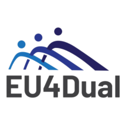
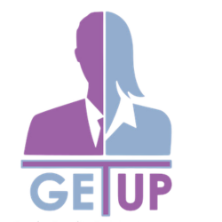
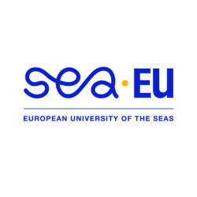
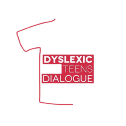

EU4Dual
EU4Dual is a European University alliance developing a transnational dual-education model that combines academic study with structured workplace training to better align higher education with labour-market needs.
Ranier contributed to the development of the course catalog and the ideas funnel, and represented the team in meetings locally and abroad.

Get Up - Gender Equality Training
Get Up – Gender Equality Training is an EU-supported initiative aimed at promoting gender equality through structured training, awareness-raising, and capacity-building activities that address bias, inclusion, and equal opportunities.
Ranier was tasked with developing the VLE for the project, which involved making available the training materials and setting workflows for the achievement of certification.
YouNG Goes Further
Young Goes Further is an Erasmus+-funded project that strengthens entrepreneurship education in secondary schools by equipping students and teachers with practical enterprise skills and inclusive learning tools.
Apart from being responsible for the project's online presence, Ranier was involved in several transnational activities, including the development of a the project report.

SEA-EU STup!
SEA-EU STup! is an entrepreneurship initiative within the SEA-EU alliance that supports student innovation and start-up development through mentoring, collaboration, and cross-border engagement among partner universities.
Ranier participated in the renowned STup! pitch deck competition where he proposed Evacuate, an innovative emergency evacuation software. The project was awarded first place.

Dyslexic Teens Dialogue
Dyslexic Teens Dialogue is an informal youth group from Malta that brings together young people with and without dyslexia to raise awareness about dyslexia, support peers, and build skills through youth‑led projects funded by the EU.
As the group founder, Mary Rose designed and managed a number of youth exchange and transnational youth initiative projects. One of the notable projects brought together mixed‑ability youth from Malta and Italy to explore learning practices, and to promote metacognitive approaches,